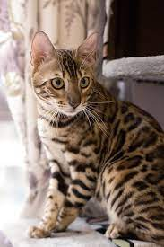
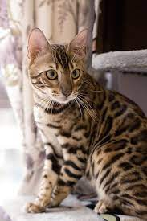

此照片為波斯貓
波斯貓有一張討人喜愛的面龐，長而華麗的背毛，優雅的舉止，故有「貓中王子」、「王妃」之稱，是世界上愛貓者最喜歡的一種純種貓，占有極其重要的地位。
英國短毛貓和其他的貓和狗相處和諧。它精力充沛、貪玩而且非常有愛心，但並不給人添麻煩。
該品種貓獨立性強，性情多變，有時表現出野性的一面，捕獵能力比其他品種的貓強。
布偶貓(Ragdoll)是家貓的一個品種，擁有柔軟而修長的毛，需要經常梳理、清洗以防止打結。

 
